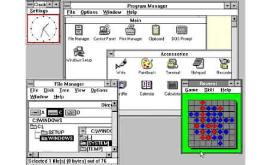
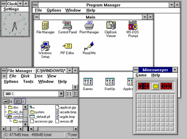
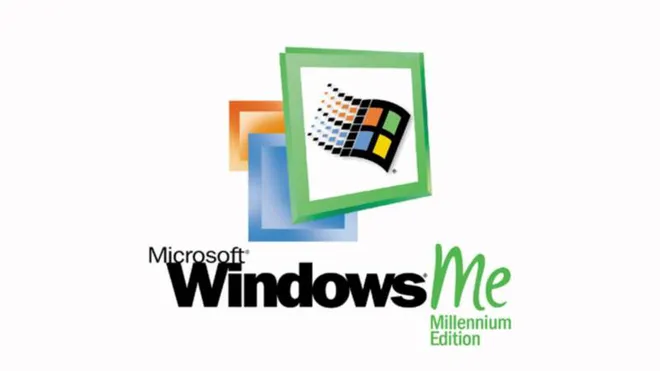
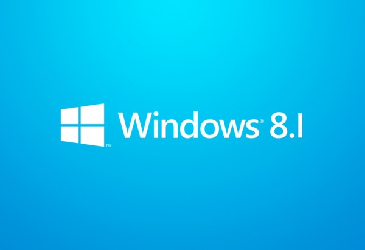
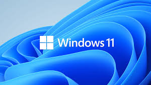

Versões do Windows
Windows 1

Aqui começa a história da Microsoft com seus sistemas operacionais Windows. A primeira versão do SO foi lançada em novembro de 1985 e foi a tentativa inicial da companhia em entregar uma interface gráfica em 16 bits. O Windows 1 foi construído sobre o MS-DOS e seu funcionamento se apoiava bastante nas entradas inseridas nas linhas de comando do sistema. Apesar disso, a Microsoft já havia colocado suporte ao mouse, incluindo também um jogo para “ensinar” as pessoas a utilizarem esse novo periférico.
Windows 2
Dois anos depois da estreia no mercado de sistemas operacionais, a Microsoft resolveu fazer o lançamento do Windows 2 em dezembro de 1987. A grande inovação desse software era a possibilidade de as janelas sobreporem umas às outras, funcionalidade que parece piada nos dias de hoje. Também foi incluída a possibilidade de minimizar e maximizar as janelas; além disso, o conhecido Painel de Controle, que reunia as principais ferramentas do sistema, também fez a sua estreia no Windows 2. Outras duas ferramentas que apareceram debutaram nessa versão e permanecem até hoje, são elas o Word e o Excel — pertencentes ao Pacote Office.
Windows 3

Apesar de os Windows 1 e 2 também terem versões derivadas com um “ponto”, foi o Windows 3.1 que precisou ser separado do 3 por causa de suas atualizações significativas. A principal delas foi a introdução da fonte TrueType, transformando o SO, pela primeira vez, em uma plataforma de publicação. O Windows 3.1 exigia 1 MB de memória RAM para ser executado e, depois de instalado, ocupava apenas 15 MB do disco rígido. O jogo “Campo Minado” fez a sua estreia nesta versão do sistema operacional da Microsoft.
windows 3.1

Apesar de os Windows 1 e 2 também terem versões derivadas com um “ponto”, foi o Windows 3.1 que precisou ser separado do 3 por causa de suas atualizações significativas. A principal delas foi a introdução da fonte TrueType, transformando o SO, pela primeira vez, em uma plataforma de publicação. O Windows 3.1 exigia 1 MB de memória RAM para ser executado e, depois de instalado, ocupava apenas 15 MB do disco rígido. O jogo “Campo Minado” fez a sua estreia nesta versão do sistema operacional da Microsoft.
windows 95

Windows 95, foi lançado no ano de 1995 e trouxe, pela primeira vez, o Menu Iniciar e a Barra de Ferramentas tão familiares para todos nós. O Windows 95 também inaugurou o conceito de “plug and play”, facilitando bastante a vida de quem precisasse utilizar um periférico diferente. Foi nesta versão que o Internet Explorer fez a sua estreia, mas chegou apenas em um pacote adicional lançado posteriormente. A arquitetura de 32 bits também começou a aparecer nesse SO, e o MS-DOS ainda era necessário para executar uma série de funções do sistema e acessar muitos de seus recursos.
windows 98

O Windows 98 foi construído sobre a versão anterior e trouxe uma série de novidades. Entre elas estão o IE 4, o Outlook Express, o Windows Address Book, o Microsoft Chat e o NetShow Play, que posteriormente seria substituído pelo Windows Media Player. Com exceção do IE, do Outlook e do WMP, todas as outras ferramentas já foram aposentadas ou substituídas. O Windows 98 introduziu o recurso de avançar e voltar na navegação, além da barra de endereço no Windows Explorer. O suporte ao padrão USB também foi bastante aprimorado, dando início a uma adoção generalizada desse formato.
windows me

O Windows Millennium Edition foi a última versão do SO baseada no MS-DOS e considerada por muitos como a pior de todas. Ela foi lançada em 2000 e teve uma variante que foi especialmente desenvolvida para equipar servidores, o Windows 2000. O IE 5.5, o Windows Media Player 7 e o Windows Movie Maker fizeram a sua estreia no Millennium Edition. O recurso de autocompletar também fez a sua primeira aparição nesse sistema operacional, mas isso não foi suficiente para salvá-lo das críticas por causa dos bugs e problemas de instalação que apresentava.
windows xp

Ela foi lançada em outubro de 2001 e foi a que mais durou no mercado, recebendo suporte até o mês de abril de 2014 — 13 anos após a sua estreia no segmento. O SO ainda se mostra relativamente popular, estando presente em mais de 20% dos computadores de todos os adeptos do SO. As principais novidades foram a repaginada no visual e a estabilidade do sistema, que agradou e conquistou milhões de usuários ao redor do mundo.
windows vista

Windows Vista trouxe um visual moderno que apostou na transparência e recursos visuais bem-chamativos, como gadgets na Área de Trabalho. No entanto, esses também foram recursos que desfavoreceram o SO por exigirem muito do hardware da máquina, limitando a sua atuação em computadores mais potentes.
windows 7

O Windows 7 disputa o topo do ranking na preferência de usuários com o XP. Lançado em 2009, esse SO trouxe mudanças visuais pequenas em relação ao seu antecessor, mas é mais rápido, estável e fácil de utilizar. Mais da metade da população mundial que tem acesso a um computador utiliza o Windows 7 como sistema operacional principal em sua máquina. Isso mostra como a Microsoft acertou em cheio com essa versão de seu software.
Windows 8

Lançado em 2012, o Windows 8 foi a tentativa mais radical da Microsoft de alterar o visual do seu sistema operacional. A mudança foi motivada por causa da chegada dos dispositivos que respondem ao toque, eliminando, por causa disso, o menu Iniciar e dando lugar a uma tela totalmente nova que se baseia no uso de tiles(pequenos quadrados que representam um programa).
windows 8.1

O Windows 8.1 veio em resposta às reclamações das pessoas por causa das alterações visuais que o SO sofreu. Por causa disso, a Microsoft decidiu retroceder e trazer de volta o botão do menu Iniciar.
windows 10

Windows 10 acabou de ter uma versão de testes liberada para o público. Ainda é muito cedo para dizer se essa variante do sistema fará sucesso, mas a Microsoft tem demonstrado que está ouvindo o feedback dos consumidores.
windows 11

O Windows 11 é um sistema operacional e a versão atual do sistema Microsoft Windows (série de sistemas operacionais para computadores pessoais, laptops e tablets) desenvolvido pela Microsoft, anunciada em 31 de agosto de 2021 e lançado em 5 de outubro de 2021,como o sucessor da versão Windows 10 (lançado seis anos antes em 2015). No final de 2020, foi anunciado que era planejado uma grande atualização para o Windows 10 denominada "Sun Valley". O Windows 11 está disponível como uma atualização gratuita do Windows 10 por meio do Windows Update para dispositivos compatíveis.